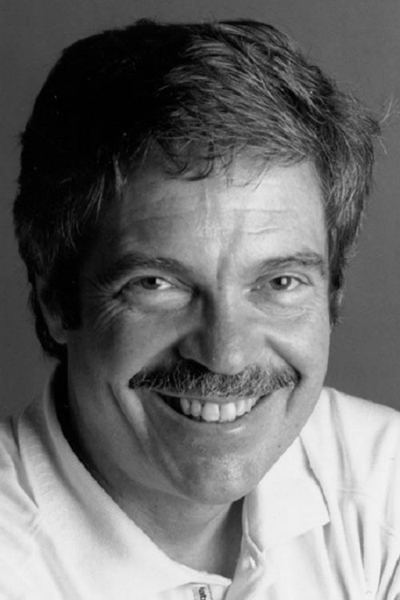

|  |
2003 год Alan С. Kay (1940) «За многочисленные новаторские идеи, которые легли в основу современных объектно-ориентированных языков, руководство командой разработчиков языка Smalltalk и за фундаментальный вклад в развитие области ПК» |
Страна: США
Образование: Доктор философии в области электротехники, Университет шт. Юта, 1970
О лауреате
Во время учёбы Kay в университете Колорадо произошло его знакомство с работами Ivan Sutherland, что подтолкнуло его к изучению языка Simulа. Вскоре он сформулировал принцип биологической аналогии, в котором утверждается, что идеальный компьютер должен быть подобен живому организму, где каждая клетка индивидуальна, но вместе они могут образовывать единую систему, способную к перегруппировке и изменению структуры.
Осенью 1968 Kay, совместно с Edward Cheadle, начинает проектировать небольшой компьютер для инженеров, который был назван FLEX. Хотя FLEX, не был запущен в массовое производство, он по существу явился прототипом персонального компьютера. Работая над FLEX, Kay был свидетелем демонстрации интерактивных вычислений Douglas Engelbart, призванных поддерживать совместные рабочие группы. Взгляд Engelbart повлиял на то, что Kay принял графические интерфейсы, гипертекст и мышь.
В 1969 году Kay защитил докторскую диссертацию, в которой разработал принципы создания персонального компьютера — мощного, но простого в управлении. После защиты диссертации Kay поступил на работу в лабораторию искусственного интеллекта Станфордского университета, а в 1971 году перешел в исследовательский центр фирмы Xerox в Пало-Альто (Palo Alto Research Center коротко PARC), где продолжил теоретическую разработку прототипа персонального компьютера, названного им Dynabook. Этот компьютер, не превышающий размер блокнота, должен был обладать возможностями для обработки текстов и графической информации, а также служить средством связи с удаленными базами данных. Кроме того, этот компьютер должен был быть недорогим и доступным широкому кругу покупателей.
В 1971 году появились микропроцессоры, и проект Kay смог частично реализоваться в компьютере Alto, представленном компанией Xerox в 1973 году. Для Alto Kay разработал визуально ориентированный язык программирования Smalltalk, в котором заложил основы графического принципа организации программ и файлов, позволяющего одновременно выводить на экран несколько программ в виде «окон».
С результатами работы Kay в Xerox PARC наиболее часто связывают два названия — Dynabook и SmallTalk.
Dynabook — концепция устройства для обучения. Концепция Dynabook описывала устройство, известное сейчас как ноутбук, или планшетный ПК, или компьютер с поверхностью для письма с почти вечным зарядом батареи и программным обеспечением, помогающим давать детям доступ к цифровым носителям знаний. Для этого был спроектирован и смоделирован графический интерфейс Star GUI, впитавший в себя все знакомые нам сегодня элементы — окна, пиктограммы, меню и многое другое. Графический интерфейс Star GUI стал прототипом интерфейса Macintosh. Проект Dynabook так никогда и не был завершён, однако оказал существенное влияние на развитие компьютерной индустрии.
SmallTalk изначально был разработан как графический язык программирования. Однако вскоре он стал полной интегрированной программной средой с отладчиком, объектно-ориентированной виртуальной памятью, редактором, управлением экранами и пользовательским интерфейсом. Smalltalk стал первым динамическим объектно-ориентированным языком программирования. С самого начала считалось, что Smalltalk, как инструмент программирования Dynabook, будет совсем простым, доступным для детей. Его первая версия была смоделирована несколькими тысячами операторов на Basic в октябре 1972.
Ключевые слова: Object-oriented Programming (объектно-ориентированное программирование), GUI, Graphical User Interface (графический пользовательский интерфейс), Windows (оконный интерфейс), Dynabook (концепт устройства для обучения), Smalltalk (язык программирования), Squeak (язык программирования, диалект языка Smalltalk)
Краткая библиография
| 1. |
Kay, Alan “The Early History of Smalltalk,” In Thomas J. Bergin, Jr. and Richard G. Gibson, Jr., eds., History of Programming Languages, II, New York: ACM, Reading, Mass: Addison-Westley, 1996. Эта глава описывает разработку Smalltalk. |
| 2. |
Kay, A. C. “User Interface: A Personal View.” In The Art of Human–Computer Interface Design, edited by B. Laurel, pp. 191–207, Boston, MA: Addison–Wesley, 1990 В этой статье описано развитие графического пользовательского интерфейса. |
| 3. |
Kay, A. C. “Computers, networks and education,” Scientific American, pp. 138-148, 1991, September. Статья, в которой обсуждаются компьютерам и образованию |
| 4. |
Kay, Alan and Adele Goldberg, “Personal Dynamic Media.” In The New Media Reader, edited by N. Montfort and N. Wardrip–Fruin, pp. 393–404, MIT Press, Cambridge, MA, 2003. Статья, впервые опубликованная в 1977 году, описывающая Dynabook. |